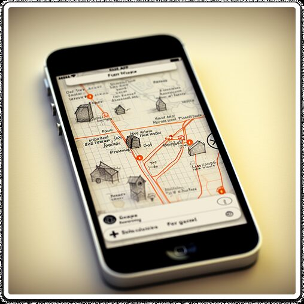
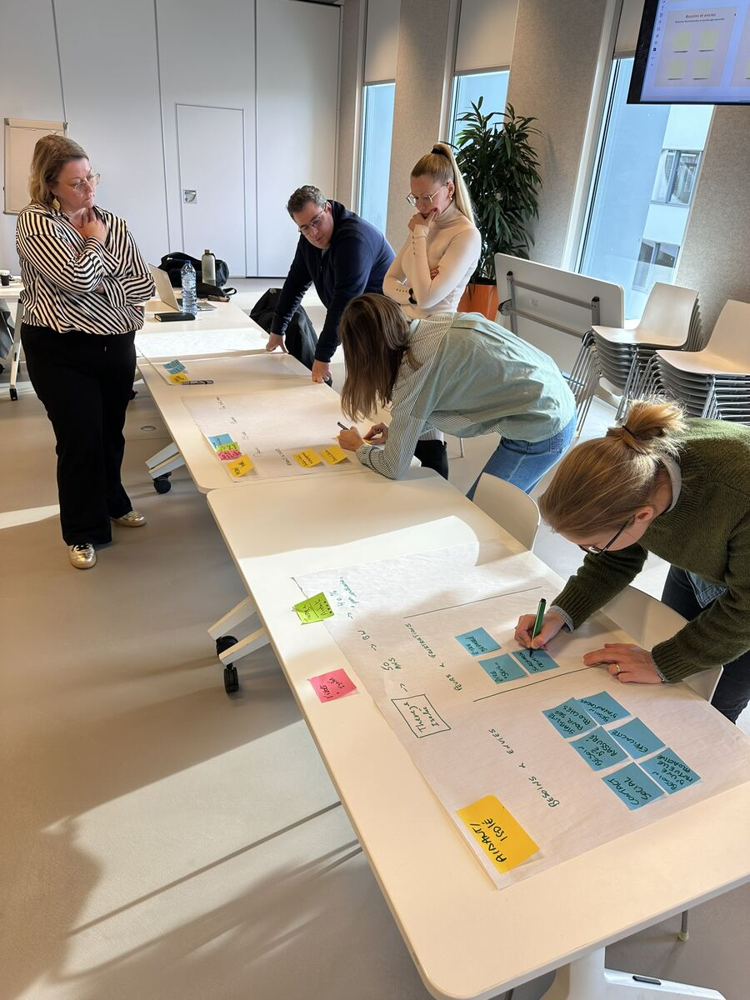
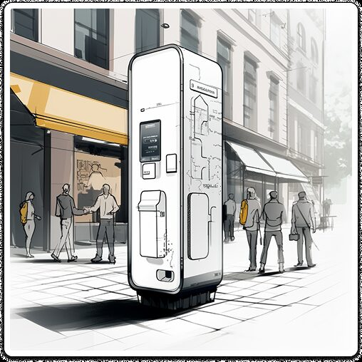
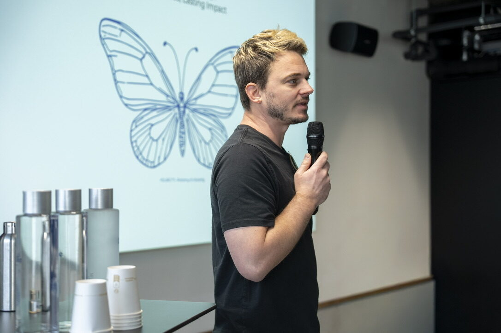

iProduct
Digital products, interfaces, and the systems behind them. From first concept to interaction model to the details that ship.
- Apps & web
- Interaction design
- Design systems
VeraCruz is a design studio for organisations whose hardest questions sit between disciplines. We design them as one.

Digital products, interfaces, and the systems behind them. From first concept to interaction model to the details that ship.

Customer journeys, operational flows, and the human side that makes products actually work in the wild.

Objects, hardware, and environments. Where digital meets the world, we design what people touch and stand in.
Most projects fail upstream. We invest in framing the right problem first, then bring craft to bear on the right thing.
Strategy and execution under one roof. No translation loss between the people who think and the people who make.
You work with senior practitioners, in small numbers, in the room. Less choreography, more thinking together.
We design for organisations that take time seriously. The work should still feel right in five years.
Most of our work sits before launch: early-stage, confidential, not yet ready to be named. We keep our partners' identities private so they can move first.

I am Raphael Hombroeck. Veracruz is the studio I built after close to twenty years designing across product, service, and physical for organisations in logistics, medical, telco, energy, and banking. Small, senior, and undivided by discipline.
A short note about your organisation and the question you are sitting with is enough to start.